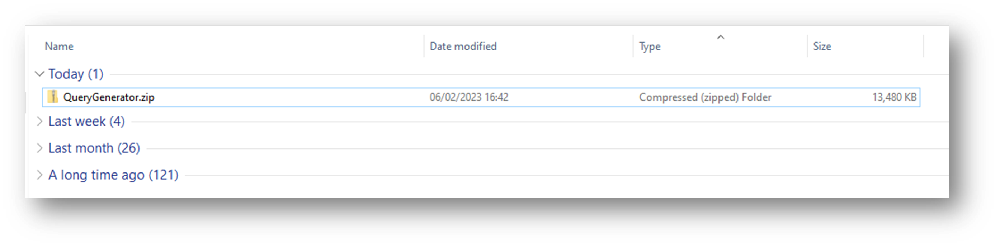
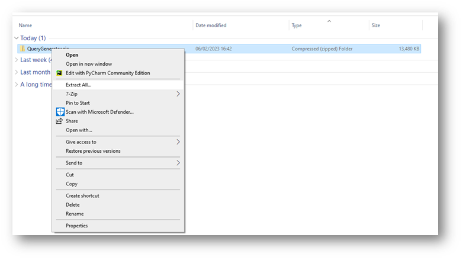
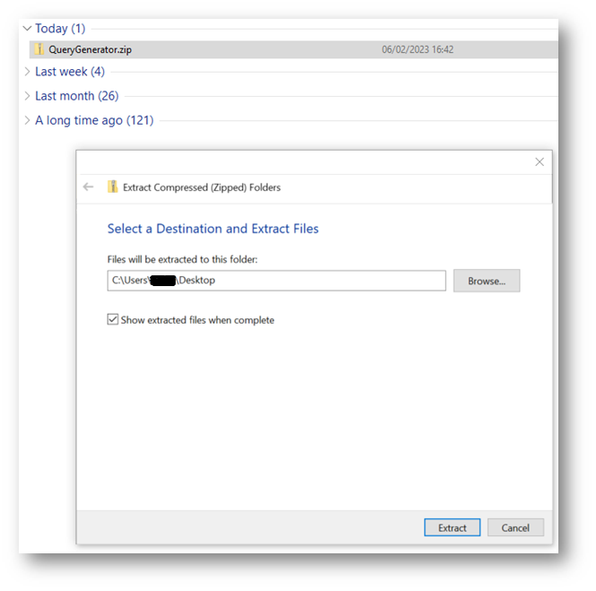
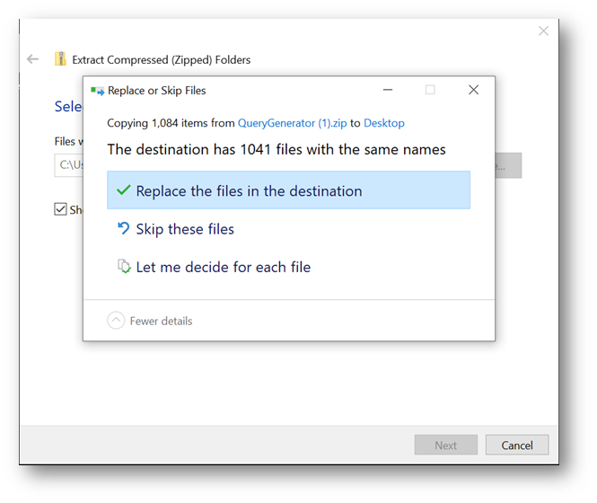
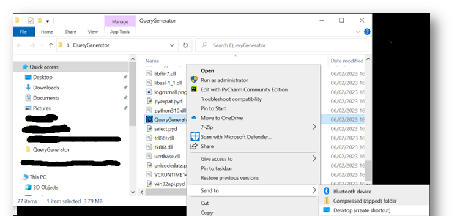

1.2.2
How to install or update your Query Generator program
Developed by Josh Swan
- Click the link below to download the latest version:
Download QueryGenerator.zip
- This will download a ZIP folder called "QueryGenerator" to your downloads folder.

- Right-click and select Extract All...

- Extract to a convenient location e.g. Desktop

- If you already have a version installed in your location, you will be prompted to take action. Select ‘Replace the files in the destination’. This shouldn’t take more than 1 minute. If this doesn’t happen, you may need to manually delete the old QueryGenerator folder to avoid confusion between versions.

- If you want to create a shortcut, head into the QueryGenerator folder where you extracted it. Find the QueryGenerator.exe file and right-click (make sure you right-click hovering over its name to bring up more options), and click Send to… Desktop (create shortcut)

- You should now be able to open the Query Generator app from your desktop